同一套版式化提示词方法，同一画风口径，十一部日式短篇。每部 8 页，起承转合完整、有结局。
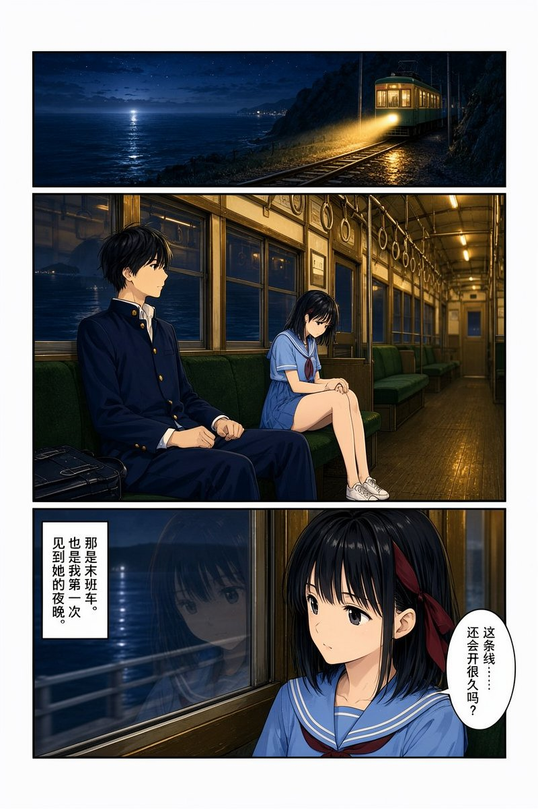
終電は海見へ
沿海小城的私铁支线下个月就要废线。高中生悠人每晚坐末班车回家，某夜遇见一个穿旧式水手服的少女——她总在早已废站的「海见」下车，并且已经在那里等了三十年。
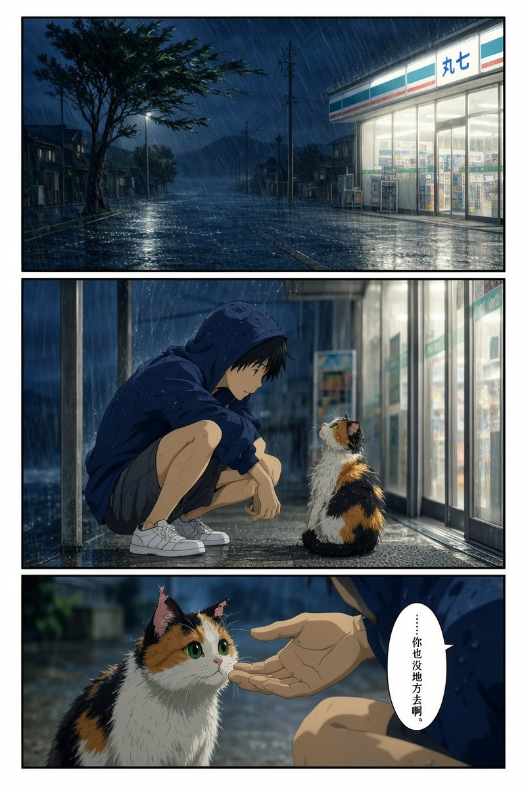
台風の夜、猫と
台风夜，少年在便利店门口收留了一只湿透的三花猫。三天后它又回来了，一路把他带到三条街外——那里住着一位每天晚上都在门口放一碟牛奶的老人。
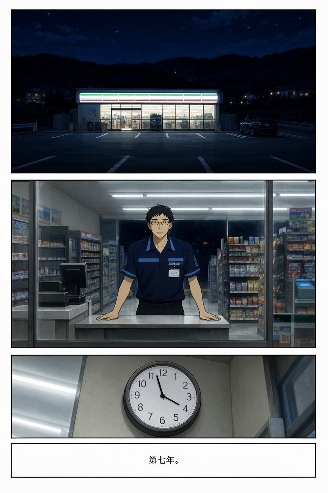
七年目のコンビニ
国道旁的便利店，夜班店员站了七年。一个女孩每晚 2:14 来买同一个鲑鱼饭团。他辞职前问了为什么——那盏灯下面，是她父亲站了十年的位置。
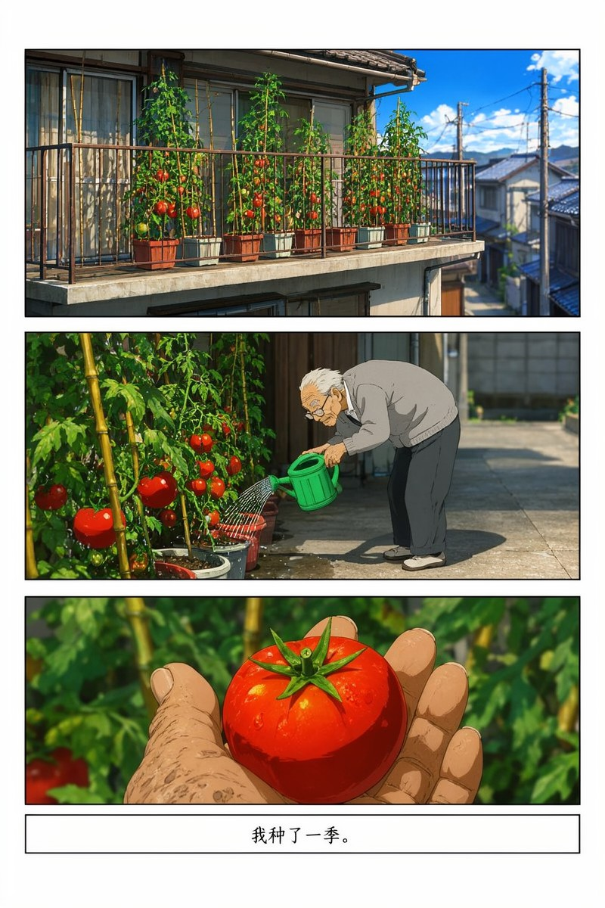
ベランダのトマト
独居老人种了一季番茄，全被隔壁小孩摘光。他抓着孩子的手腕找上门，却看见那两个番茄洗干净了，摆在一张小小的遗像前。
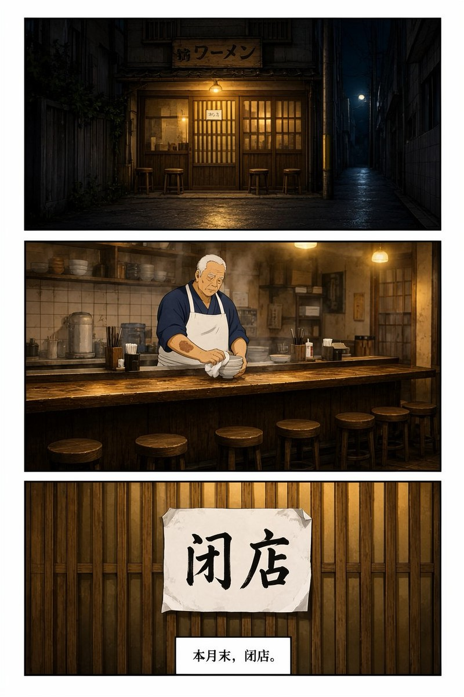
最後の一杯
拉面店关门前最后一天，来了三个客人，各坐一角，各点一碗，谁也不说话。老板认出他们——二十年前，这父子三人在这家店吃过一次，之后就没再一起吃过。
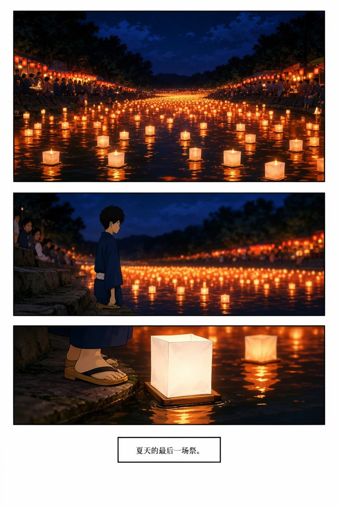
灯籠流し
夏日祭的河边，把名字写在纸灯上放流，河会替你实现一个愿望，代价是忘掉一个人。他写下了自己的名字。第二天早上，他记不起母亲的脸。
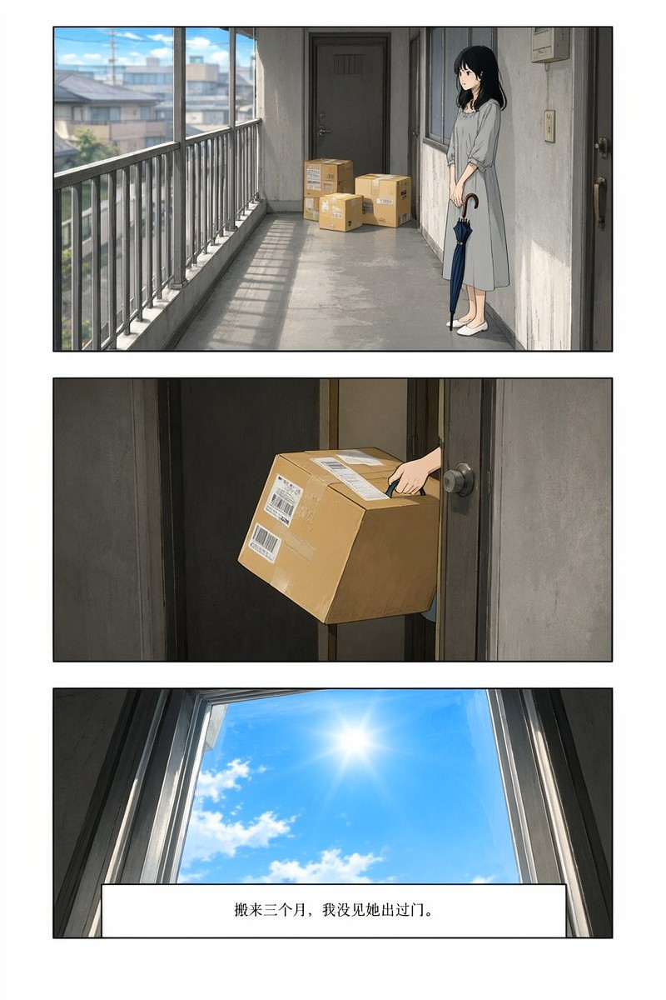
雨女の傘
她撑伞出门就会下雨，所以她从不出门。隔壁的男人每天「恰好」带两把伞，直到有一天他不信，拉着她走进街上——伞撑开的一瞬间，雨落下来。
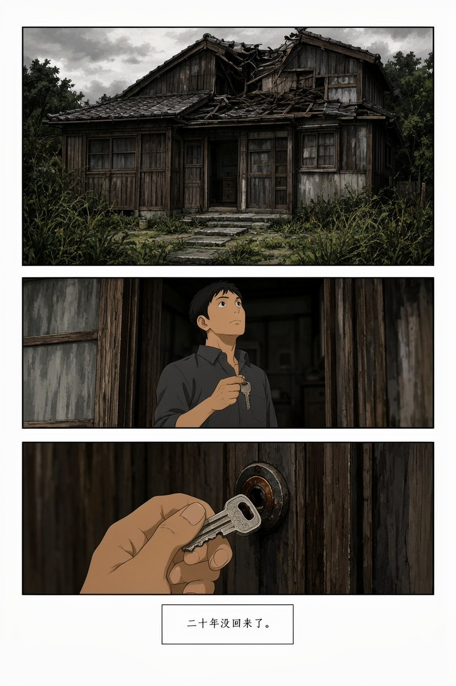
ざしきわらしの家
老屋要拆了，屋里住着一个座敷童子。他回来处理拆迁，夜里听见小孩跑动，壁橱里有一双小小的赤脚印——一直延伸到后院廊下。
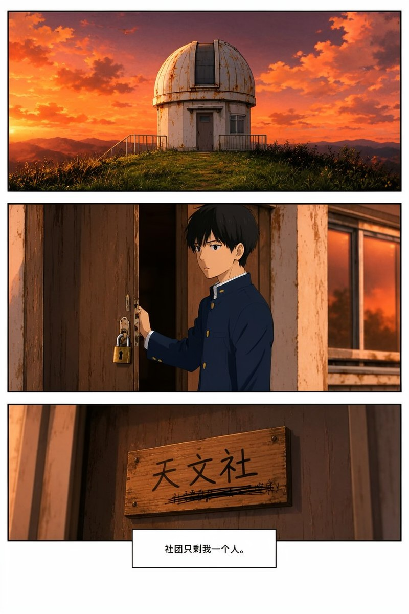
放課後の天文台
天文社只剩一个人。他在废弃的圆顶里收到一段来自三十年后的信号——是他自己的声音，只说了一句话：把望远镜留给下一个来的人。
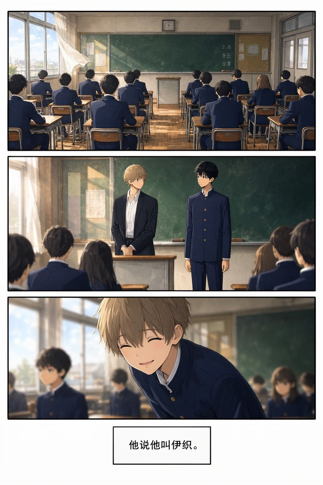
転校生の七日目
转学生每周一出现、周日消失，全班都记得他，只有主角记得「上周也有一个」。第二周又来一个一模一样的。第七天，主角把自己的名字从值日表上擦掉了。
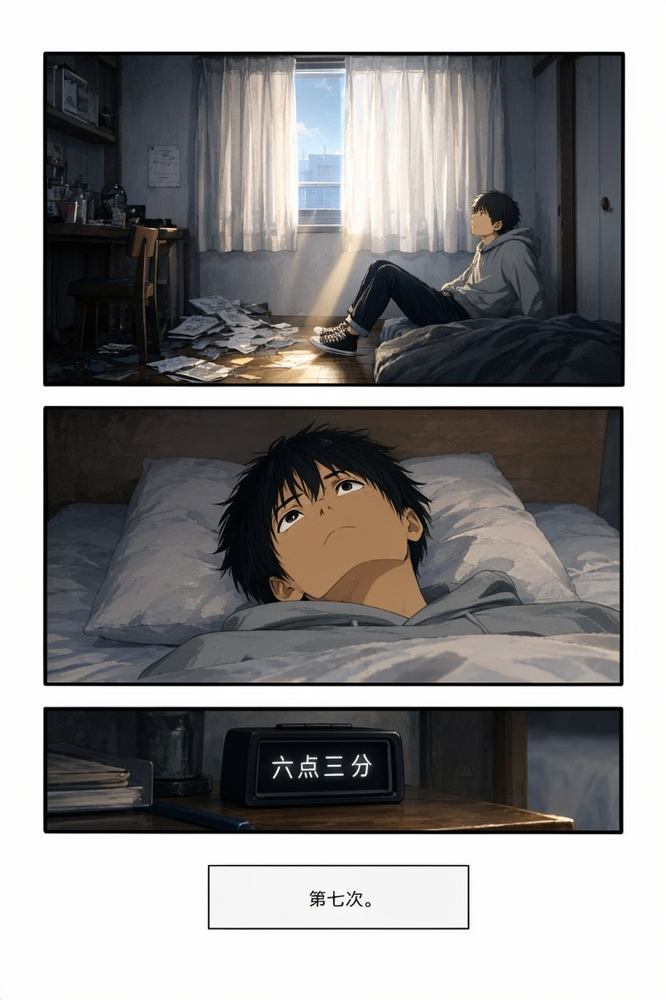
七度目の朝
每天醒来都是同一天。他试了六次都没能救下那个人。第七次他决定不救，而是陪她走完这一天。
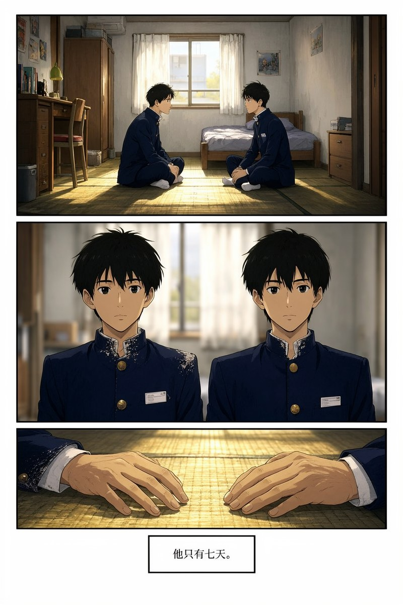
複製体の別れ
他被复制了一份，复制品只有七天寿命，负责替他上课。第六天复制品说：我想去一次海边。